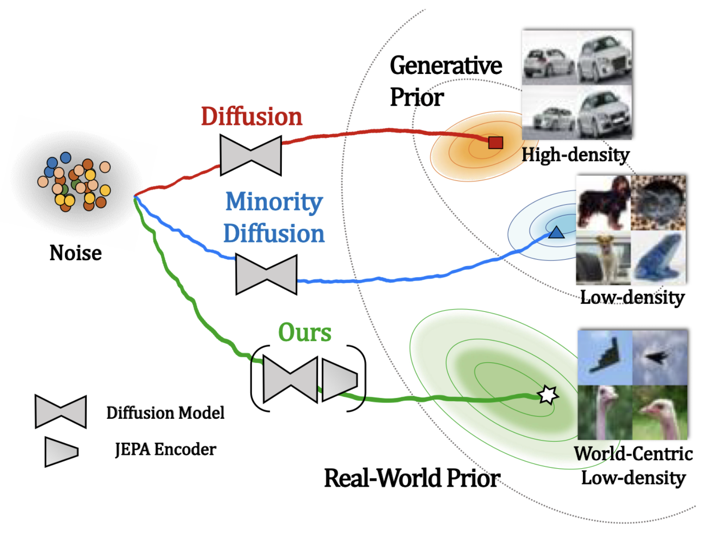

Research
My research focuses on developing models for steering low-density regions of diffusion models.
My work explores diffusion guidance for broad priors by leveraging the density of an external model as JEPA-SCORE.
I enjoy building tools and models that expand the creative and scientific possibilities of computer vision and machine learning.
|
|

|
Beyond Generative Priors: Minority Sampling with JEPA-Guided Diffusion
ICML 2026
A JEPA-guided diffusion framework for minority sampling, steering generation toward semantically
rare low-density regions while preserving fidelity and text alignment.
|
Education
|
B.S. in Computer & Electronics Engineering, DGIST
|
Feb, 2021 - Feb, 2025
|
|
Experience
First Lieutenant
Republic of Korea Army (ROKA)
- Selected as one of 20 research officers nationwide dedicated to science-and-technology R&D for national defense
|
Mar 2025 - Present
|
Research Officer for National Defense
Agency for Defense Development (ADD)
Manager: Dr. Eunjin Koh / Advisor: Dr. Hoseong Kim
|
Mar 2025 - Present
|
If you'd like to discuss potential collaborations or have any questions, please feel free to contact me at
parksol@add.re.kr.
|
|
{kind=link}